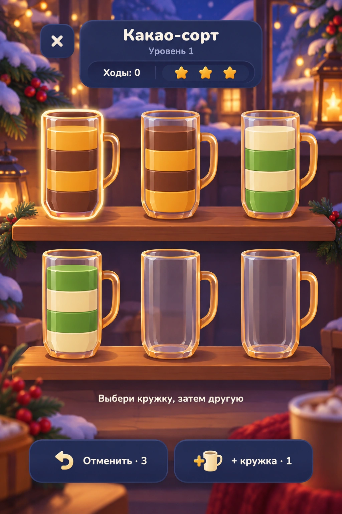
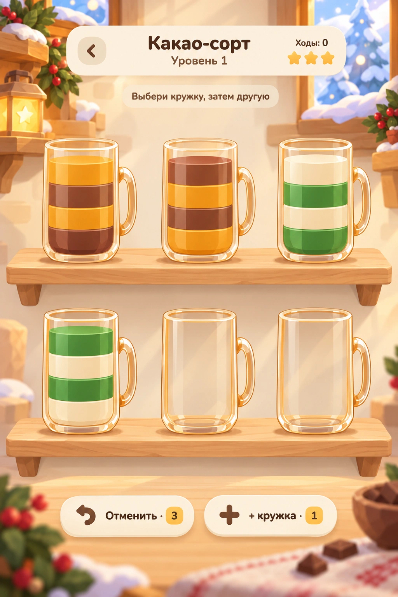
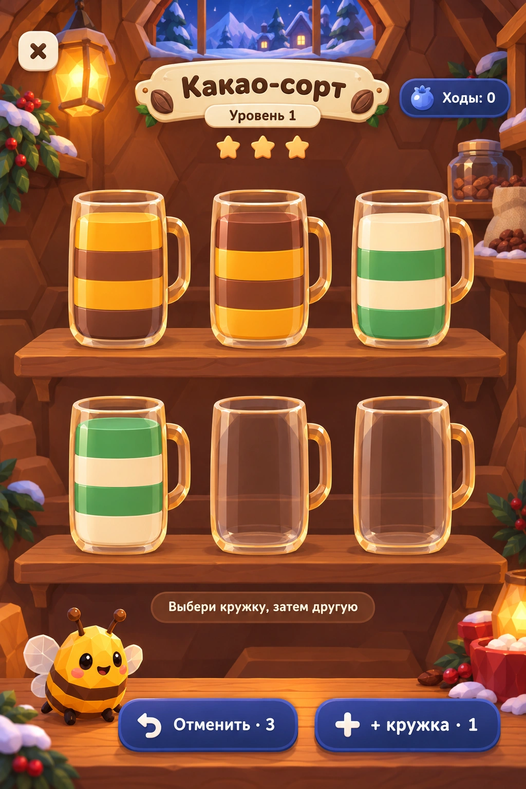

Три нарисованных направления с одинаковой раскладкой. Нажми на рисунок для полного размера. Текущий прототип
Ближе к вечернему интерфейсу Buzzle. Компактные черничные панели.

Светлый интерфейс Buzzle. Самый спокойный фон и мягкие кнопки.

Больше характера: дерево, медовые грани и Жужа у прилавка.
